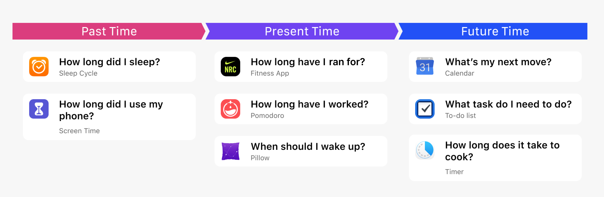
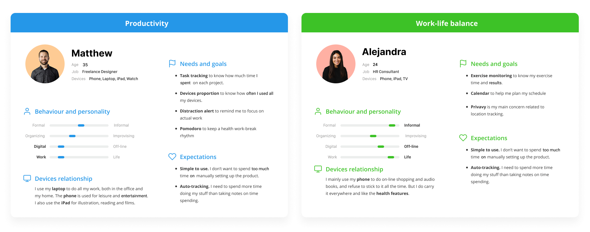
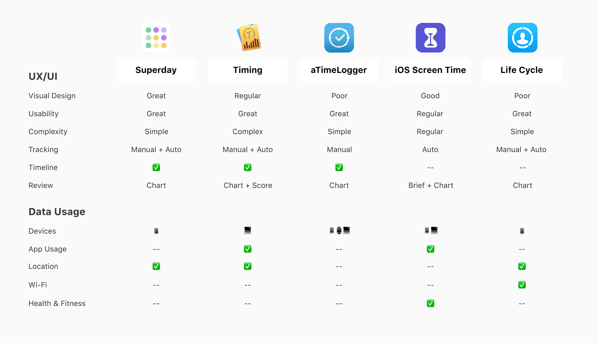
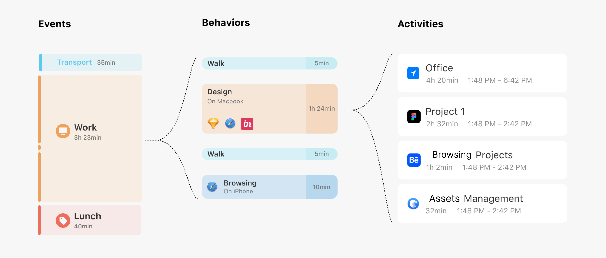
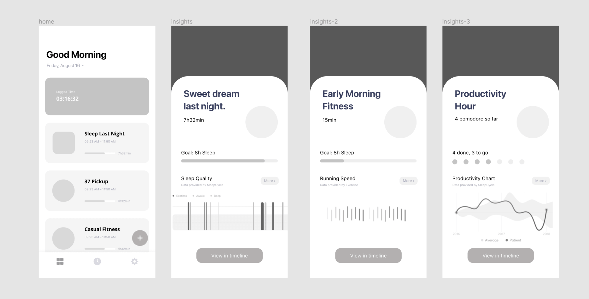

Home and Settings
The home screen acts as a splash page for reviewing the day and also displays the current event. Also, users can access settings from this page and toggle dark mode if needed.
“Quantifying everyday life” refers to tracking daily activities to further self-awareness, and improve productivity, health, and work-life balance. However, it requires consistent logging, patience, and discipline.
Timelapse is an integrated mobile and smartwatch application that helps people keep track of how they spend their time on a daily basis. It was inspired by late-night conversations with friends about feeling that time was slipping away, without knowing where that time was being spent.
With the rise of smartwatches, I grew fascinated by their unique features -- specifically their ability to track and measure personal milestones from the day, including steps walked, heart-rate, sleeping quality, etc.
I wanted to see if there was a streamlined solution that would allow for users to skip the arduous task of manually logging activities and behaviors by instead relying solely on a smartwatch for automated recording.
The Russian scientist Aleksandr Lyubishchev created a time-recording method in 1916, which he used to document 56 years of his life with pen and paper. His biography espouses the benefits and methodology behind tracking the hours of the day and how we spend them.
I applied Lyubishchev’s method of time-recording using two personas and their respective two individual daily schedules.
The timeline unveils user patterns. Users often overestimate their working hours and underestimate the time they spend on leisure activities. Reviewing the graph revealed distractions during work.
Manual time-tracking is painful. Users would be prone to feeling frustrated if they forgot to log their time, or even tempted to quit the exercise.
Simple visuals are more effective than pure data. Users want to see exactly what they're spending their time on but also need accessibility, so simple visuals work much better than complex, unorganized data.
To see what already existed in addressing the productivity problem, I researched other time-tracking applications, what did they well, and what could be improved.
We have so many applications on our phone already. Each app can provide automatic insight into what activities we complete and how we spend our time. I came up with the idea of defining a time-assessment system composed of three layers: Events, Behaviors, and Activities.
Quantifying everyday life cannot be complete without valuable review and feedback. I designed “highlights” to automatically present information on productivity, sleep, fitness, distractions, and memorable moments.
The home screen acts as a splash page for reviewing the day and also displays the current event. Also, users can access settings from this page and toggle dark mode if needed.
To assess productivity and health levels, this screen draws from apps like the health and exercise monitor, the user's calendar, and Pomodoro. The simple structure enables users to set goals and track their current status easily.
This screen compiles the photos and videos taken in a day and chronologically displays them, creating a representation of the time spent in a day, through providing a visual model of the events completed.
This is a direct and straightforward approach to displaying every activity. Users can tap each section for further details about how they used varying apps throughout the day.
For the watch's display, I thought the most effective way to present productivity would be through the current time and task, with the option of viewing the timeline to see the day's events at a glance.
1. Designing across platforms. This project taught me about how to best represent data and time across varying devices. Designing for a smartwatch was definitely a new experience for me in terms of formatting and prototyping.
2. Time realization. Through this design exercise, I realized how much time people spend on their electronic devices in a day and the designer's ethical obligation of encouraging users to spend more time off their devices. Quantifying the time spent can help people figure out how to better allocate their time.
3. Further improvements. Based on the ethical consideration of encouraging time spent offscreen, I would love to implement a goal system to help the user adjust how they currently use their time and accomplish certain goals (i.e. spend 30 mins max. on social media)